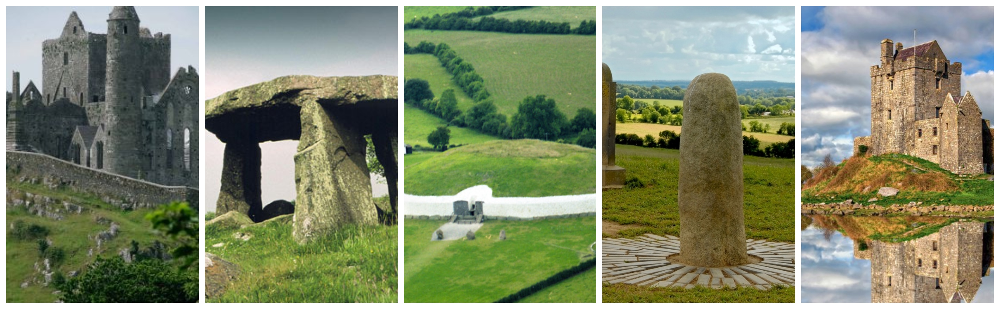
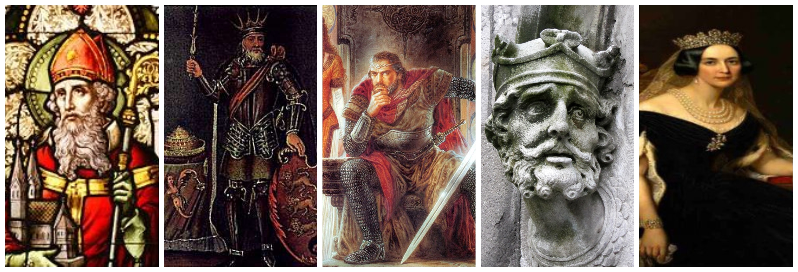

The Places & The People: A brief history of Ireland
The Places
The first evidence of human presence in Ireland dates to about 12,500 years ago, shortly after the receding of the ice after the younger Dryas cold phase of the Quaternary ended around 9700 BC.
The Irish history recorded over the last 200+ years has been rich one, but fraught with many challenges including the Viking conquest, the Norman conquest, the Black Plague and Various famines, most notably the Great famine of 1843 to 1848.
The History of ireland can be measured by the tenacity and perservence of those alive during these harshest of periods. even before the foreign conquests, Irish kings and clans faught bitterly for power on the Island, which are reflected in the annals and history books that cover the subject.
Learn more about the placesThe People
There are many colorfully interesting people in Irish History. There are certain names that instantly come to mind. People such as St Patrick, Brian Boru, James Joyce or Michael Collins. However there are many more that may not be instantly recognisable or familiar to the average person.
Within the pages of this website i hope to shine a light on some of the most famous figures in irish history, as well as some people who may be a little bit more elusive in terms of fame and familiarity.
The History of ireland is a long and colorful one, full of war and hardship, plague and wisespread misery. This section presents a couple of figures who lived amonst this hardship and helped, or possibly hindered life for people on this island.
Learn more about the people